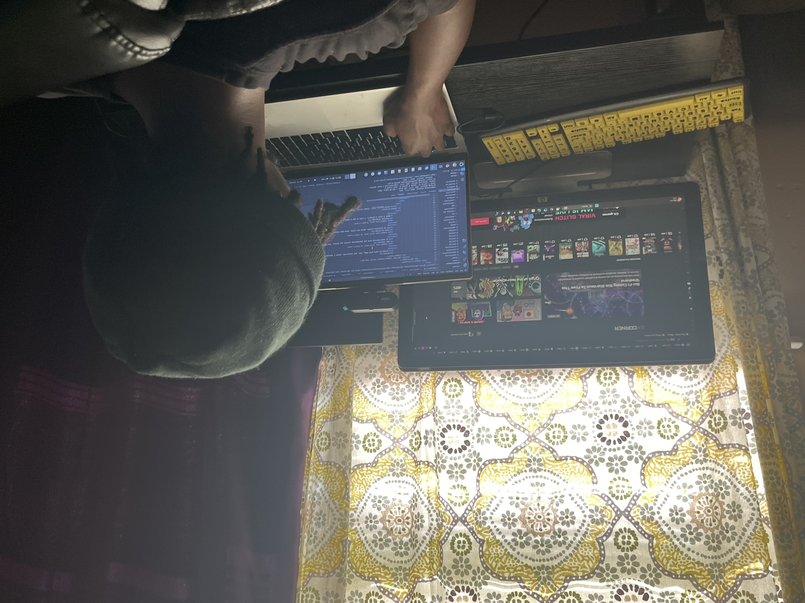

More About Me

I'm a Software Engineer who began with an interest in making Roblox games. I experimented with the engine's code and after a while, started to branch off into coding. I started to look into programs where I could get the skills to better my understanding which brought me to App Academy, where I completed the 960-hour full-time software engineering program (Sep 2024 – Mar 2025). Through the program, I furthered my skills in JavaScript, HTML, and CSS while learning the fundamentals of frontend and backend development.
The first project I worked on was a site based off of instagram called Chara-stagram. This application was a solo project made around a superhero API that sent data about characters which I used to make the profile of the users. My next project, Spot Homes, I learned to create a backend using Express and Sequelize JS while working with a partner and later learned React on the frontend. I then spent some time figuring out how to put my site on the web with Render. The next projects, Nom Now and Capstone Academy were my two Python projects where I used Python and Flask to create a backend and React for the frontend. I also learned Python syntax, Docker, and AWS.
Currently I'm running a homelab in the form of a server. I've explored new operating systems outside of windows through virtualization and used new remote access tools such as nomachine, virt viewer, rustdesk, and the terminal(ssh). I've experimented with firewalls and my own virtualized router with PFSense.
Since finishing the program I've kept building, including paid freelance work in 2026 (Home Tools 2, a property-mapping app for a home inspection business) and Omni, a local AI desktop chat app. I'm also practicing data structures and algorithms in JavaScript, and I'm looking for a software engineering role where I can keep doing what I love, programming.